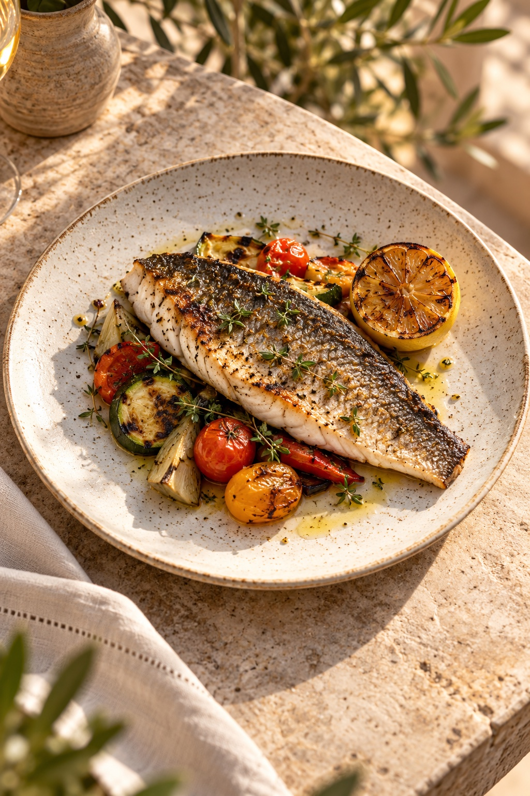
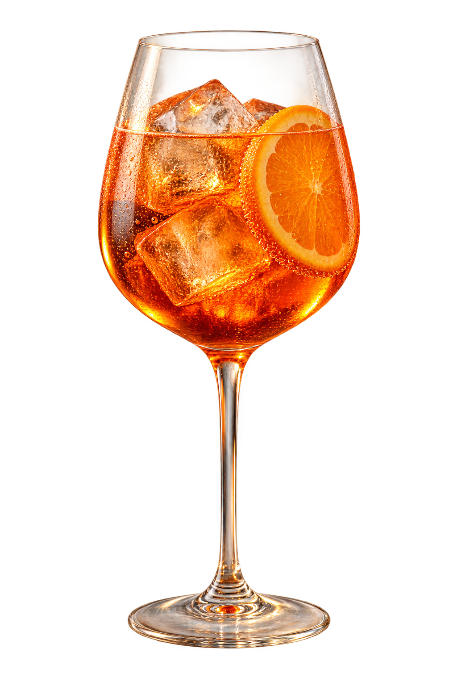
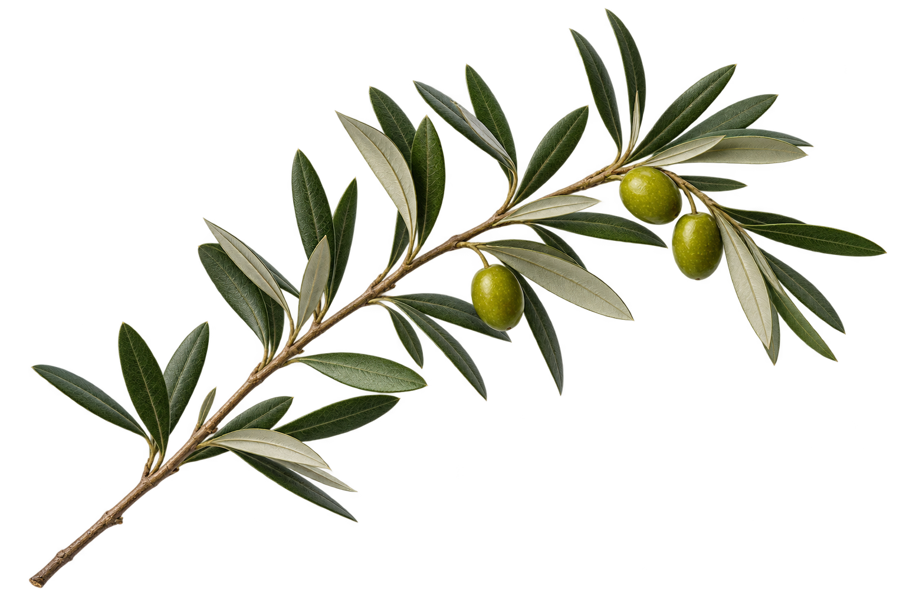

В MAREA приходят за свежим уловом, домашней пастой и тем самым светом перед закатом. А остаются — ради разговоров, которые хочется продолжить.
Здесь делятся блюдами, заказывают ещё один бокал и позволяют вечеру случиться.
МОРЕ БЛИЖЕ, ЧЕМ КАЖЕТСЯCUCINA · VINO · MOMENTI

FATTO CON AMORE — ПРИГОТОВЛЕНО С ЛЮБОВЬЮbuon appetito!
ИЗ МОРЯ. ИЗ САДА. ОТ СЕРДЦА.
Простые вещи. Большой вкус.
Спелые томаты, хорошее оливковое масло, рыба на огне. Мы оставляем продуктам их характер — и добавляем немного итальянского настроения.
Крудо из сибаса1 650 ₽
Лингвини с лангустинами2 400 ₽
Лимонный тарт850 ₽
Сезонное меню
НАСТРОЕНИЕ РАЗДЕЛАЛингвини с лангустинами2 400 ₽
LA CARTA · СЕЗОННОЕ МЕНЮ
Начните с моря. Закончите лимоном.
Холодные закуски — в центр стола. Пасту — пока горячая. А десерт можно выбрать чуть позже.
da condividere
marea
Состав и аллергены уточняют перед заказом. Для действующего ресторана меню требует подтверждения команды кухни.
28 вкусов. Один средиземноморский характер.Полное меню
НАША КУХНЯ
Не усложнять то, что уже прекрасно.
В основе меню — кухня итальянского побережья: сырая рыба с цитрусом, паста с морепродуктами и овощи, которым достаточно оливкового масла.
Мы задумали MAREA как место для общего стола. Начать с бурраты и крудо, разделить горячее и оставить место для лимонного тарта — у каждого ужина свой порядок.
КОГДА СОЛНЦЕ СТАНОВИТСЯ МЯГЧЕL’ORA DELL’APERITIVO
un altro momento…
APERITIVO


Солнце. В вашем бокале.
Цитрус и лёд, последний свет над морем. Момент, в котором день становится вечером.